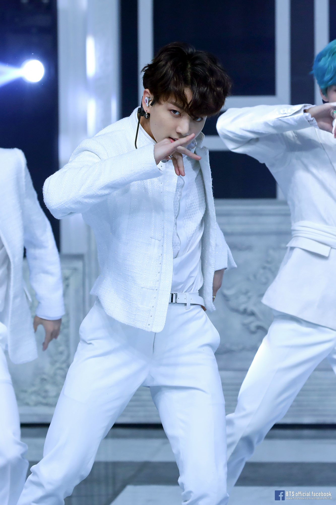

His solo song, "Euphoria", sold over 4 million copies worldwide,
becoming the highest selling B-side track by a Korean artist.
It also was the longest-charting song by a male Korean solo artist
on the Billboard World Digital Song Sales chart.
He had the most retweeted tweet in the world for 2019 when he posted a dance cover to "Bad Guy".
He received offers from eight different entertainment agencies, but
he decided to join Big Hit Entertainment after randomly seeing and falling in love
with future member Rap Monster's rap.

He is the most highly searched Korean idol on YouTube,
and is also the first (and still only) K-Pop idol to reach
over 10 billion views on TikTok.
He is known as the Golden Maknae (youngest member)
because he excels at many different things.